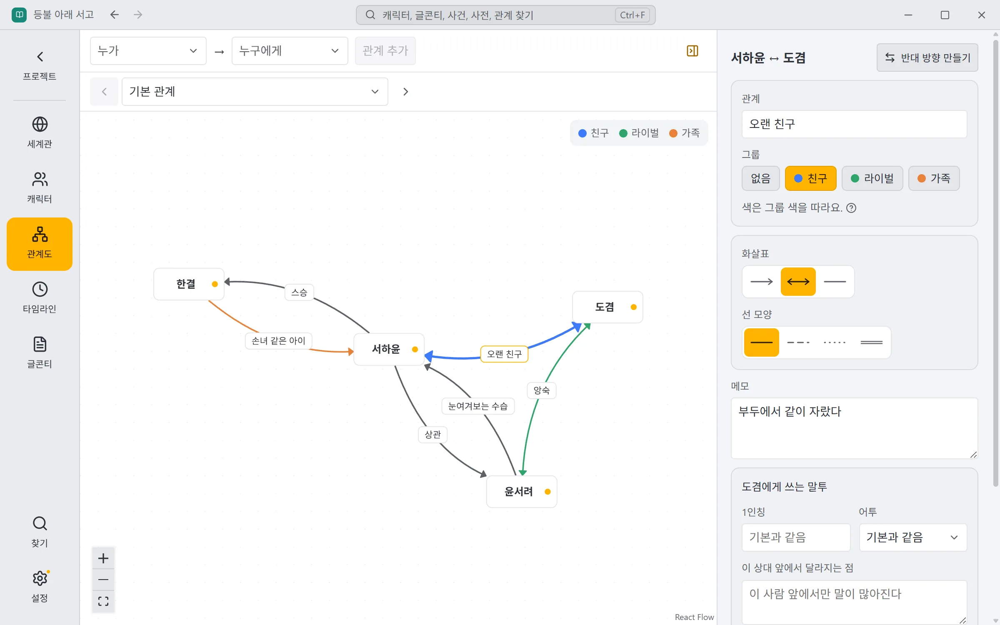
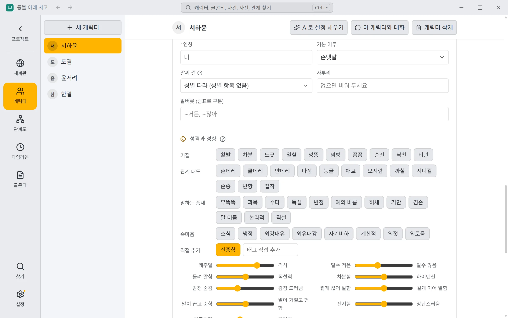
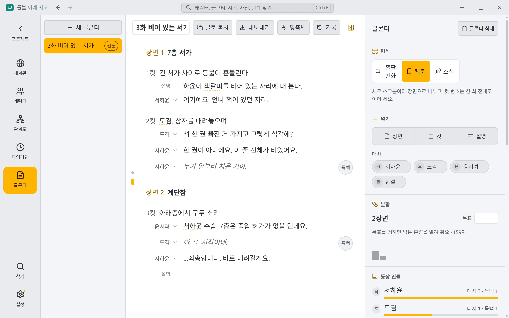
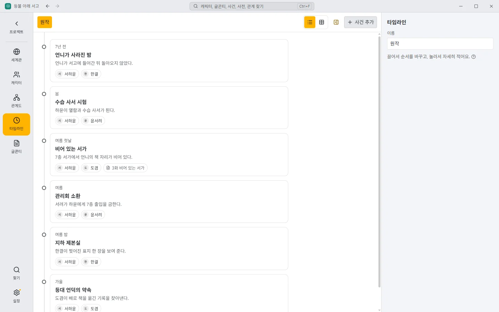
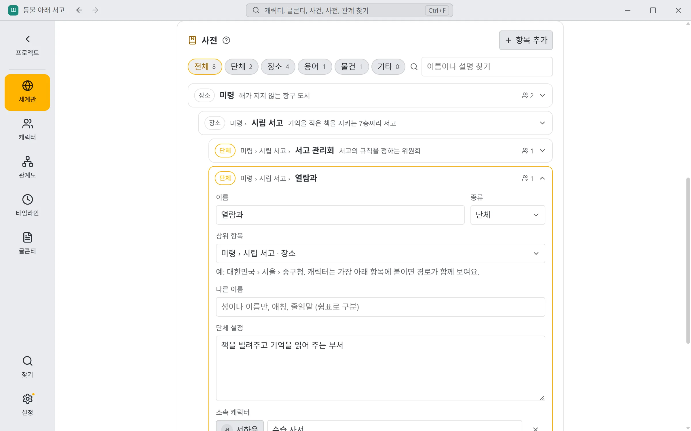

관계도
캐릭터를 끌어다 놓고 선으로 잇습니다. 한쪽에서만 보는 관계도 따로 적을 수 있고, 상대에 따라 달라지는 호칭이나 말투도 관계마다 남겨 둡니다.
사자는 동인 창작용 메모장입니다. 캐릭터 설정, 말투, 관계, 사건 순서, 글콘티를 따로 흩어 두지 않고 한 프로젝트 안에서 같이 고칩니다.
Windows용 내려받기 무료 · Windows 10, 11

캐릭터를 끌어다 놓고 선으로 잇습니다. 한쪽에서만 보는 관계도 따로 적을 수 있고, 상대에 따라 달라지는 호칭이나 말투도 관계마다 남겨 둡니다.
존댓말 정도, 말수, 버릇 같은 걸 정해 두고 상황별 예시 대사를 모읍니다. 대사를 쓰다가 이 사람이 이렇게 말했던가 싶을 때 바로 꺼내 봅니다.

출판 만화, 웹툰, 소설 형식으로 씁니다. 페이지와 컷을 나누고 대사에 캐릭터를 붙여 두면, 나중에 이름을 바꿔도 대사가 따라옵니다. PDF로 내보낼 수 있습니다.

사건을 순서대로 늘어놓고 누가 나오는지 표시합니다. 시점을 옮기면 그때의 관계로 관계도가 바뀝니다.

지명, 단체, 물건, 용어를 정리합니다. 도시 아래 건물, 건물 아래 부서처럼 계층으로 묶고 누가 어디 소속인지 같이 적습니다.

설정 초안, 예시 대사, 캐릭터와의 대화에 AI를 쓸 수 있습니다. 쓰지 않아도 모든 기능이 동작합니다. 직접 받은 API 키를 넣거나, 컴퓨터 안에서 도는 모델을 고를 수 있습니다.
작업 내용은 계정이나 서버 없이 이 컴퓨터에만 저장됩니다. 글콘티는 PDF나 텍스트 파일로 꺼낼 수 있습니다.